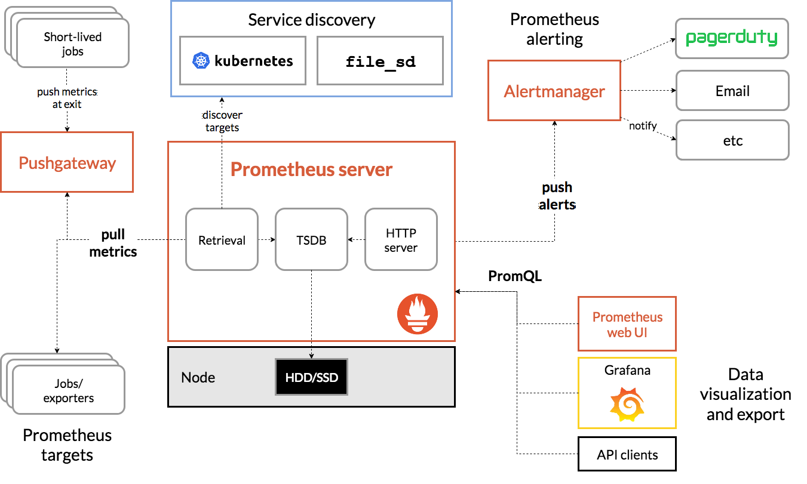

Prometheus 是云原生监控领域的事实标准，2012 年由 SoundCloud 发起，2016 年成为 CNCF 第二个毕业项目（仅次于 Kubernetes）。本文从架构、安装、服务发现、K8s 监控、PromQL 等十个维度，系统性地剖析 Prometheus 的设计原理与实战技巧。
1. Prometheus 架构
整体架构

Prometheus 生态由以下核心组件构成：
- Prometheus Server：生态中枢，负责指标采集（Retrieval）、时序存储（TSDB）、查询服务（HTTP Server）
- Exporters：将第三方系统的指标转换为 Prometheus 可识别格式（如 Node Exporter、MySQL Exporter）
- Pushgateway：为短生命周期任务提供推送式指标中转站
- Alertmanager：接收 Prometheus 告警，进行去重、分组、路由、抑制后通知
- Service Discovery：动态发现监控目标（Kubernetes、Consul、DNS 等）
- Grafana / 表达式浏览器：数据可视化
数据流全链路（官方架构图）：

textTargets (应用/Exporter)
↓ HTTP GET /metrics (Pull)
Prometheus Server
├── Retrieval (采集引擎)
│ ├── Service Discovery (发现 Target)
│ └── Scrape Manager (调度采集)
├── TSDB (时序数据库)
│ ├── Head Block (内存写入)
│ ├── WAL (预写日志)
│ ├── Persistent Blocks (持久化块)
│ └── Compaction (压缩合并)
├── Rules Engine (规则引擎)
│ ├── Recording Rules (预计算)
│ └── Alerting Rules (告警评估)
└── HTTP Server (API/UI)
├── PromQL 查询
└── Remote Read/Write
↓ 告警
Alertmanager (去重/分组/路由/通知)
↓ 可视化
GrafanaPrometheus Server 内部交互
Prometheus Server 启动后，各子系统的协作流程：
- 配置加载：
config/包解析prometheus.yml，构建 scrape 配置和 SD 配置 - 服务发现：
discovery/包根据配置启动对应的 Discoverer（如 Kubernetes SD），持续 watch 目标变化，将结果写入 channel - 采集调度：
scrape/包的 ScrapeManager 从 SD channel 读取目标列表，为每个 job 创建 ScrapePool，按scrape_interval周期性发起 HTTP 请求 - 数据写入：采集到的样本通过 Appender 接口写入 TSDB 的 Head Block，同时写入 WAL 保证持久性
- 规则评估：
rules/包的 Manager 按evaluation_interval周期评估 recording rules 和 alerting rules - 查询服务：
web/包提供 HTTP API，promql/包的 Engine 解析和执行 PromQL 查询
源码架构
Prometheus 源码仓库 (prometheus/prometheus) 的核心目录：
textprometheus/
├── cmd/prometheus/ # 主入口 main.go
├── config/ # 配置文件解析 (prometheus.yml)
├── discovery/ # 服务发现实现
│ ├── kubernetes/ # K8s 服务发现
│ ├── consul/ # Consul 服务发现
│ ├── dns/ # DNS 服务发现
│ ├── file/ # 文件服务发现
│ ├── http/ # HTTP 服务发现
│ └── ... # 其他 SD (EC2, GCE, Azure 等)
├── scrape/ # 采集引擎 (ScrapeManager, ScrapePool, Scraper)
├── tsdb/ # 时序数据库
│ ├── head.go # Head Block (内存)
│ ├── wal/ # 预写日志
│ ├── index/ # 倒排索引
│ ├── chunks/ # 数据块存储
│ ├── tombstones/ # 删除标记
│ └── compact.go # 压缩合并
├── promql/ # PromQL 解析与执行引擎
│ ├── parser/ # 语法解析
│ ├── engine.go # 查询执行
│ └── math.go # 数学函数
├── rules/ # 规则引擎 (Recording/Alerting)
├── web/ # HTTP API 和 UI
├── storage/ # 存储抽象层 (本地 + Remote)
├── notifier/ # 告警通知发送
├── promhttp/ # HTTP 中间件 (instrumentation)
└── model/ # 数据模型 (labels, value, time)TSDB 内部结构详解
Prometheus 本地存储（TSDB）是理解 Prometheus 性能特性的关键：
Head Block（内存块）：
- 所有新写入的样本首先进入 Head Block
- Head Block 中的 series 通过内存中的 hash map 快速定位
- 每个时间序列在内存中维护一个 chunk 切片，chunk 使用 XOR 编码压缩浮点数
- 默认每个 chunk 容纳 120 个样本，满后刷入磁盘
WAL（Write-Ahead Log）：
- 每个样本写入 Head Block 前先写入 WAL
- WAL 按段（segment）组织，默认每段 128MB
- 崩溃恢复时从 WAL 重放，保证数据不丢失
- 可通过
--storage.tsdb.wal-compression启用 WAL 压缩
Persistent Block（持久化块）：
- Head Block 写满一个时间窗口后（默认 2 小时），刷入磁盘成为一个 Persistent Block
- 每个 Block 目录结构：
text<block_id>/
├── chunks/ # 压缩后的样本数据
├── index/ # 倒排索引 (series → chunks 映射)
├── meta.json # 元信息 (时间范围、compaction level)
└── tombstones # 删除标记Compaction（压缩合并）：
- 将多个较小的 Block 合并为较大的 Block，减少 Block 数量
- 合并同时重建索引，提升查询效率
- Compaction level：L0(2h) → L1(6h) → L2(18h) → L3(54h)...
- 通过
--storage.tsdb.retention.time控制数据保留时长（默认 15 天）
查询路径：
- PromQL 查询时，Engine 同时查询 Head Block（内存）和 Persistent Blocks（磁盘）
- 通过倒排索引快速过滤匹配 label 的 series
- 数据从 chunks 文件读取后解码返回
2. 拉取与推送模型
Pull 模型：核心设计
Prometheus 采用 Pull 模型采集指标，即 Prometheus 主动向目标发起 HTTP GET 请求获取 /metrics 端点的数据。
Pull 模型的优势：
- 服务自省：Prometheus 知道哪些目标健康、哪些不可达（up 指标）
- 简化客户端：被监控服务只需暴露 HTTP 端点，无需知道 Prometheus 的存在
- 避免推送风暴：不会因大量客户端同时推送导致服务端过载
- 调试方便：直接浏览器访问 /metrics 即可查看指标
核心配置参数：
| 参数 | 默认值 | 说明 |
|---|---|---|
scrape_interval | 1m | 采集间隔 |
scrape_timeout | 10s | 单次采集超时 |
metrics_path | /metrics | 指标端点路径 |
honor_labels | false | 是否保留抓取数据中已有的 job/instance 标签 |
honor_timestamps | true | 是否使用目标暴露的时间戳 |
scheme | http | 协议 (http/https) |
honor_labels 详解：
当 Prometheus 抓取数据时，会自动附加 job 和 instance 标签。如果目标暴露的指标本身也有这些标签，就产生冲突：
honor_labels: false（默认）：Prometheus 保留自己的标签，将目标的冲突标签重命名为exported_job、exported_instancehonor_labels: true：保留目标暴露的标签，忽略 Prometheus 附加的标签
典型场景：抓取 Pushgateway 或联邦化时，需要设为 true。
Scrape 生命周期
一次完整的采集过程：
text1. Service Discovery 产生目标列表
↓
2. relabel_configs (抓取前重标签)
- 过滤不需要的目标
- 修改 __address__、__metrics_path__ 等元标签
- 添加自定义标签
↓
3. 构造 HTTP 请求
- GET http://<__address__><__metrics_path__>
- 添加 Accept 头协商协议
- 添加认证头 (basic_auth / bearer_token)
↓
4. 发送请求，等待响应 (scrape_timeout)
- 成功：解析 exposition format
- 超时/错误：记录 up=0
↓
5. 解析响应体
- 支持 Prometheus text format 和 OpenMetrics format
- 解析指标名称、标签、值、时间戳
↓
6. metric_relabel_configs (抓取后重标签)
- 过滤不需要的指标
- 修改指标标签
↓
7. 追加到 TSDB (Appender)
- 写入 Head Block + WAL
- 更新 up 指标 (1=成功, 0=失败)每次采集后，Prometheus 会自动生成 up 指标：
up{job="xxx", instance="yyy"} = 1：采集成功up{job="xxx", instance="yyy"} = 0：采集失败
这是 Pull 模型的核心优势之一——通过 up 指标可以精确知道目标是否可达。
Push 模型：Pushgateway
Pushgateway 是 Prometheus 生态中唯一的推送入口，用于短生命周期任务（如 Cron Job、批处理脚本）推送指标。
为什么需要 Pushgateway：
Pull 模型无法监控短生命周期进程——这些进程可能只运行几秒就退出，Prometheus 的采集间隔（通常 1 分钟）可能永远抓不到它。Pushgateway 充当中转站，进程退出前把指标推送给 Pushgateway，Prometheus 再从 Pushgateway 拉取。
API 接口：
bash# 推送指标（覆盖同名 job+labels 组合）
curl -X POST http://pushgateway:9091/metrics/job/my_job/instance/my_instance \
-d 'my_metric 42'
# 推送指标（合并，不覆盖其他指标）
curl -X PUT http://pushgateway:9091/metrics/job/my_job/instance/my_instance \
-d 'my_metric 42'
# 删除某 job+instance 的所有指标
curl -X DELETE http://pushgateway:9091/metrics/job/my_job/instance/my_instance
# 删除所有指标
curl -X DELETE http://pushgateway:9091/api/v1/metricsPython 推送示例：
pythonfrom prometheus_client import CollectorRegistry, Gauge, push_to_gateway
registry = CollectorRegistry()
g = Gauge('batch_job_duration_seconds', 'Duration of batch job', registry=registry)
g.set(123.4)
# 推送到 Pushgateway
push_to_gateway('pushgateway:9091', job='batch_process', registry=registry)Go 推送示例：
gopackage main
import (
"log"
"time"
"github.com/prometheus/client_golang/prometheus"
"github.com/prometheus/client_golang/prometheus/push"
)
func main() {
startTime := time.Now()
// ... 执行批处理任务 ...
duration := prometheus.NewGauge(prometheus.GaugeOpts{
Name: "batch_job_duration_seconds",
Help: "Duration of batch job",
})
duration.Set(time.Since(startTime).Seconds())
if err := push.New("http://pushgateway:9091", "batch_job").
Collector(duration).
Push(); err != nil {
log.Fatal(err)
}
}Pushgateway 的局限性：
- 单点问题：所有推送都经过 Pushgateway，它成为瓶颈和单点故障
- 数据不是实时的：即使推送的进程已退出，Pushgateway 仍保留数据，Prometheus 会持续拉到"过期"数据
- 不适合服务监控：不要把 Pushgateway 当作服务代理，长期运行的服务应该暴露 /metrics 端点让 Prometheus 直接拉取
- up 指标失真：Prometheus 抓取 Pushgateway 成功时 up=1，但无法反映推送源是否还活着
Pushgateway 的 prometheus.yml 配置：
yamlscrape_configs:
- job_name: 'pushgateway'
honor_labels: true # 必须设为 true，保留推送时指定的 job/instance
static_configs:
- targets: ['pushgateway:9091']Remote Write API
Prometheus 支持将采集到的数据远程写入外部存储，实现长期保存：
yamlremote_write:
- url: "http://thanos-receive:19291/api/v1/receive"
queue_config:
max_samples_per_send: 10000
capacity: 20000
max_shards: 100
write_relabel_configs:
- source_labels: [__name__]
regex: 'go_.*'
action: drop # 不发送 Go runtime 指标常见远程存储方案：
| 方案 | 特点 |
|---|---|
| Thanos | 支持长期存储（S3/GCS）、全局查询、高可用 |
| Cortex | 多租户、支持 Cassandra/S3 后端 |
| VictoriaMetrics | 高性能、兼容 Prometheus 协议 |
| Mimir | Grafana Labs 出品，Cortex 分支 |
| Loki | 日志系统，不存储指标但常配合使用 |
Pull vs Push 对比
| 维度 | Pull | Push |
|---|---|---|
| 谁发起 | Prometheus 主动拉取 | 目标主动推送 |
| 健康感知 | 通过 up 指标自动感知目标状态 | 无法自动感知推送源状态 |
| 配置复杂度 | 需要配置目标地址 | 目标自注册 |
| 流量控制 | Prometheus 控制采集频率 | 可能出现推送风暴 |
| 适用场景 | 长期运行的服务 | 短生命周期任务 |
| 调试 | 浏览器直接访问 /metrics | 需要 Pushgateway 中转 |
| 防火墙友好 | 需要 Prometheus 能访问目标 | 需要目标能访问 Pushgateway |
3. 监控指标方法论
Google 四个黄金信号 (Four Golden Signals)
出自 Google SRE Book 第 6 章，是面向用户请求驱动型服务的监控方法论。
1. 延迟 (Latency)
定义：服务处理一个请求所花费的时间。需要区分成功请求和失败请求的延迟——一个返回 500 错误的请求可能延迟极低（因为快速失败了），如果只看平均值会掩盖问题。
Prometheus 指标示例：
promql# HTTP 请求延迟直方图
http_request_duration_seconds_bucket{handler="/api/users", le="0.1"}
http_request_duration_seconds_sum
http_request_duration_seconds_count
# P99 延迟
histogram_quantile(0.99, rate(http_request_duration_seconds_bucket[5m]))
# 区分成功/失败请求的 P99
histogram_quantile(0.99,
sum by (le, status_code) (
rate(http_request_duration_seconds_bucket{status_code=~"2.."}[5m])
)
)2. 流量 (Traffic)
定义：衡量系统承载的请求量。不同系统有不同的流量衡量方式：HTTP 服务用 QPS，数据库用 TPS，流媒体用带宽。
Prometheus 指标示例：
promql# 每秒请求量 (QPS)
rate(http_requests_total[5m])
# 按状态码分类的 QPS
sum by (status_code) (rate(http_requests_total[5m]))
# 入站流量 (bytes)
rate(http_request_size_bytes_sum[5m])3. 错误 (Errors)
定义：请求失败的比率。包括显式错误（HTTP 500）和隐式错误（返回了错误内容、响应超时等）。
Prometheus 指标示例：
promql# 错误率
sum(rate(http_requests_total{status_code=~"5.."}[5m]))
/
sum(rate(http_requests_total[5m]))
# 错误率超过 1% 告警
100 *
sum(rate(http_requests_total{status_code=~"5.."}[5m]))
/
sum(rate(http_requests_total[5m])) > 14. 饱和度 (Saturation)
定义：系统资源的使用程度，反映系统有多"满"。关注的是最受限的资源——当某个资源达到上限时，系统性能会急剧下降。
Prometheus 指标示例：
promql# CPU 饱和度 (运行队列长度)
node_load1 / on(instance) count(node_cpu_seconds_total{mode="idle"}) by (instance)
# 内存饱和度
1 - node_memory_MemAvailable_bytes / node_memory_MemTotal_bytes
# 磁盘饱和度 (IO 等待)
rate(node_cpu_seconds_total{mode="iowait"}[5m])
# 连接池饱和度
mysql_connections_active / mysql_connections_maxNetflix USE 方法
由 Brendan Gregg（Netflix 性能工程团队）提出，适用于基础设施资源（CPU、内存、磁盘、网络）的监控方法论。
USE = Utilization + Saturation + Errors
- Utilization（利用率）：资源忙碌的百分比
- Saturation（饱和度）：资源排队/溢出的程度
- Errors（错误）：错误事件计数
CPU 资源：
| 指标 | 类型 | Prometheus 指标 |
|---|---|---|
| 利用率 | Utilization | 1 - rate(node_cpu_seconds_total{mode="idle"}[5m]) |
| 饱和度 | Saturation | node_load1 / count(node_cpu_seconds_total{mode="idle"}) by (instance) |
| 错误 | Errors | rate(node_cpu_seconds_total{mode="steal"}[5m])（虚拟化 CPU 偷取） |
内存资源：
| 指标 | 类型 | Prometheus 指标 |
|---|---|---|
| 利用率 | Utilization | 1 - node_memory_MemAvailable_bytes / node_memory_MemTotal_bytes |
| 饱和度 | Saturation | rate(node_vmstat_pgmajfault[5m])（主要页面错误） |
| 错误 | Errors | kube_pod_container_status_terminated_reason{reason="OOMKilled"} |
磁盘资源：
| 指标 | 类型 | Prometheus 指标 |
|---|---|---|
| 利用率 | Utilization | 1 - node_filesystem_avail_bytes / node_filesystem_size_bytes |
| 饱和度 | Saturation | rate(node_disk_io_time_seconds_total[5m]) |
| 错误 | Errors | rate(node_disk_read_errors_total[5m]) |
网络资源：
| 指标 | 类型 | Prometheus 指标 |
|---|---|---|
| 利用率 | Utilization | rate(node_network_transmit_bytes_total{device="eth0"}[5m]) |
| 饱和度 | Saturation | rate(node_netstat_Tcp_RetransSegs[5m])（TCP 重传） |
| 错误 | Errors | rate(node_network_receive_errs_total[5m]) + rate(node_network_transmit_errs_total[5m]) |
RED 方法
由 Tom Wilkie（Prometheus 早期贡献者、Grafana Labs 联合创始人）提出，专门针对请求驱动型的微服务：
RED = Rate + Errors + Duration
- Rate（速率）：每秒请求数
- Errors（错误）：每秒失败请求数
- Duration（持续时间）：请求延迟分布
RED 方法本质上是四个黄金信号的简化版，特别适合构建微服务仪表盘——每个微服务一行，展示 Rate/Errors/Duration 三个指标。
USE vs RED vs 四个黄金信号
| 方法论 | 适用对象 | 关注维度 | 复杂度 |
|---|---|---|---|
| USE | 基础设施资源 (CPU/内存/磁盘/网络) | 利用率/饱和度/错误 | 低 |
| RED | 请求驱动型微服务 | 速率/错误/延迟 | 中 |
| 四个黄金信号 | 用户请求驱动型系统 | 延迟/流量/错误/饱和度 | 高 |
选择建议：
- 监控基础设施（节点、数据库、缓存）→ USE
- 监控微服务 API → RED
- 需要更全面的用户视角 → 四个黄金信号
SLI/SLO/SLA
定义：
- SLI (Service Level Indicator)：衡量服务水平的量化指标。例如："99% 的请求在 200ms 内完成"
- SLO (Service Level Objective)：对 SLI 的目标承诺。例如："P99 延迟 < 200ms"
- SLA (Service Level Agreement)：带有商业后果的 SLO 承诺（未达标时的赔偿条款）
用 Prometheus 定义 SLO：
yaml# 告警规则：SLO 违反
groups:
- name: slo-alerts
rules:
- alert: HighErrorRate
expr: |
100 * sum(rate(http_requests_total{status_code=~"5.."}[1h]))
/ sum(rate(http_requests_total[1h])) > 0.1
for: 5m
labels:
severity: critical
annotations:
summary: "错误率超过 SLO (0.1%)"错误预算 (Error Budget)：
Error Budget = 1 - SLO 目标
例如 SLO 是 99.9% 可用性，则每月的 Error Budget = 0.1% × 30天 × 86400秒 ≈ 2592 秒 ≈ 43.2 分钟。
promql# 30 天错误预算消耗率
100 * (
1 -
sum(rate(http_requests_total{status_code!~"5.."}[30d]))
/
sum(rate(http_requests_total[30d]))
)4. 安装部署
二进制安装
Step 1：下载
bash# 下载最新版（以 v2.53.0 为例）
wget https://github.com/prometheus/prometheus/releases/download/v2.53.0/prometheus-2.53.0.linux-amd64.tar.gz
tar xzf prometheus-2.53.0.linux-amd64.tar.gz
cd prometheus-2.53.0.linux-amd64Step 2：配置 prometheus.yml
yamlglobal:
scrape_interval: 15s # 默认采集间隔
evaluation_interval: 15s # 默认规则评估间隔
scrape_timeout: 10s # 默认采集超时
# Prometheus 自身监控
scrape_configs:
- job_name: 'prometheus'
static_configs:
- targets: ['localhost:9090']
- job_name: 'node'
static_configs:
- targets:
- '192.168.1.10:9100'
- '192.168.1.11:9100'
labels:
env: 'production'
# 告警管理器
alerting:
alertmanagers:
- static_configs:
- targets: ['localhost:9093']
# 告警规则文件
rule_files:
- 'rules/*.yml'Step 3：创建 systemd 服务
ini# /etc/systemd/system/prometheus.service
[Unit]
Description=Prometheus
After=network.target
[Service]
Type=simple
User=prometheus
Group=prometheus
ExecStart=/usr/local/bin/prometheus \
--config.file=/etc/prometheus/prometheus.yml \
--storage.tsdb.path=/data/prometheus \
--storage.tsdb.retention.time=30d \
--storage.tsdb.wal-compression \
--web.listen-address=0.0.0.0:9090 \
--web.enable-lifecycle \
--web.enable-admin-api \
--log.level=info
Restart=on-failure
LimitNOFILE=65536
[Install]
WantedBy=multi-user.targetbashsudo systemctl daemon-reload
sudo systemctl enable prometheus
sudo systemctl start prometheusStep 4：验证
bash# 检查服务状态
curl http://localhost:9090/-/healthy
# 返回 "Prometheus is Healthy."
# 检查是否抓取到自身
curl 'http://localhost:9090/api/v1/query?query=up'常用启动参数：
| 参数 | 默认值 | 说明 |
|---|---|---|
--config.file | prometheus.yml | 配置文件路径 |
--storage.tsdb.path | data/ | TSDB 数据目录 |
--storage.tsdb.retention.time | 15d | 数据保留时长 |
--storage.tsdb.retention.size | 0 (无限制) | 数据保留大小上限 |
--storage.tsdb.wal-compression | false | 启用 WAL 压缩 |
--web.listen-address | 0.0.0.0:9090 | 监听地址 |
--web.enable-lifecycle | false | 启用 API 热加载 |
--web.enable-admin-api | false | 启用管理 API |
--web.max-connections | 512 | 最大并发连接 |
--query.max-samples | 50000000 | 单次查询最大样本数 |
--query.timeout | 2m | 查询超时 |
热加载配置：
bash# 方式一：发送 SIGHUP
kill -HUP <pid>
# 方式二：HTTP API（需要 --web.enable-lifecycle）
curl -X POST http://localhost:9090/-/reloadKubernetes 安装
方式一：直接使用 Manifests
yaml# namespace.yaml
apiVersion: v1
kind: Namespace
metadata:
name: monitoringyaml# rbac.yaml
apiVersion: v1
kind: ServiceAccount
metadata:
name: prometheus
namespace: monitoring
---
apiVersion: rbac.authorization.k8s.io/v1
kind: ClusterRole
metadata:
name: prometheus
rules:
- apiGroups: [""]
resources:
- nodes
- nodes/metrics
- nodes/proxy
- services
- endpoints
- pods
verbs: ["get", "list", "watch"]
- apiGroups: ["extensions", "networking.k8s.io"]
resources:
- ingresses
verbs: ["get", "list", "watch"]
- nonResourceURLs: ["/metrics"]
verbs: ["get"]
---
apiVersion: rbac.authorization.k8s.io/v1
kind: ClusterRoleBinding
metadata:
name: prometheus
roleRef:
apiGroup: rbac.authorization.k8s.io
kind: ClusterRole
name: prometheus
subjects:
- kind: ServiceAccount
name: prometheus
namespace: monitoringyaml# configmap.yaml - Prometheus 配置
apiVersion: v1
kind: ConfigMap
metadata:
name: prometheus-config
namespace: monitoring
data:
prometheus.yml: |
global:
scrape_interval: 15s
evaluation_interval: 15s
scrape_configs:
- job_name: 'kubernetes-apiservers'
kubernetes_sd_configs:
- role: endpoints
scheme: https
tls_config:
ca_file: /var/run/secrets/kubernetes.io/serviceaccount/ca.crt
bearer_token_file: /var/run/secrets/kubernetes.io/serviceaccount/token
relabel_configs:
- source_labels:
- __meta_kubernetes_namespace
- __meta_kubernetes_service_name
- __meta_kubernetes_endpoint_port_name
action: keep
regex: default;kubernetes;https
- job_name: 'kubernetes-nodes'
scheme: https
tls_config:
ca_file: /var/run/secrets/kubernetes.io/serviceaccount/ca.crt
bearer_token_file: /var/run/secrets/kubernetes.io/serviceaccount/token
kubernetes_sd_configs:
- role: node
relabel_configs:
- action: labelmap
regex: __meta_kubernetes_node_label_(.+)
- target_label: __address__
replacement: kubernetes.default.svc:443
- source_labels: [__meta_kubernetes_node_name]
regex: (.+)
target_label: __metrics_path__
replacement: /api/v1/nodes/${1}/proxy/metrics
- job_name: 'kubernetes-pods'
kubernetes_sd_configs:
- role: pod
relabel_configs:
- source_labels: [__meta_kubernetes_pod_annotation_prometheus_io_scrape]
action: keep
regex: true
- source_labels: [__meta_kubernetes_pod_annotation_prometheus_io_path]
action: replace
target_label: __metrics_path__
regex: (.+)
- source_labels:
- __address__
- __meta_kubernetes_pod_annotation_prometheus_io_port
action: replace
regex: ([^:]+)(?::\d+)?;(\d+)
replacement: $1:$2
target_label: __address__
- action: labelmap
regex: __meta_kubernetes_pod_label_(.+)
- source_labels: [__meta_kubernetes_namespace]
action: replace
target_label: kubernetes_namespace
- source_labels: [__meta_kubernetes_pod_name]
action: replace
target_label: kubernetes_pod_nameyaml# deployment.yaml
apiVersion: apps/v1
kind: Deployment
metadata:
name: prometheus
namespace: monitoring
spec:
replicas: 1
selector:
matchLabels:
app: prometheus
template:
metadata:
labels:
app: prometheus
spec:
serviceAccountName: prometheus
containers:
- name: prometheus
image: prom/prometheus:v2.53.0
args:
- '--config.file=/etc/prometheus/prometheus.yml'
- '--storage.tsdb.path=/prometheus'
- '--storage.tsdb.retention.time=30d'
- '--web.enable-lifecycle'
ports:
- containerPort: 9090
volumeMounts:
- name: config
mountPath: /etc/prometheus
- name: data
mountPath: /prometheus
volumes:
- name: config
configMap:
name: prometheus-config
- name: data
persistentVolumeClaim:
claimName: prometheus-data
---
apiVersion: v1
kind: PersistentVolumeClaim
metadata:
name: prometheus-data
namespace: monitoring
spec:
accessModes: ["ReadWriteOnce"]
resources:
requests:
storage: 50Gi
---
apiVersion: v1
kind: Service
metadata:
name: prometheus
namespace: monitoring
spec:
type: NodePort
ports:
- port: 9090
targetPort: 9090
nodePort: 30090
selector:
app: prometheus方式二：Helm (kube-prometheus-stack)
bash# 添加仓库
helm repo add prometheus-community https://prometheus-community.github.io/helm-charts
helm repo update
# 安装
helm install monitoring prometheus-community/kube-prometheus-stack \
--namespace monitoring \
--create-namespace \
--set prometheus.prometheusSpec.retention=30d \
--set prometheus.prometheusSpec.storageSpec.volumeClaimTemplate.spec.storageClassName=local-path \
--set prometheus.prometheusSpec.storageSpec.volumeClaimTemplate.spec.resources.requests.storage=50Gi \
--set grafana.adminPassword=admin123方式三：Prometheus Operator (ServiceMonitor)
Prometheus Operator 引入了 ServiceMonitor 和 PodMonitor 两个 CRD，通过声明式方式定义监控目标：
yaml# ServiceMonitor 自动发现匹配的 Service
apiVersion: monitoring.coreos.com/v1
kind: ServiceMonitor
metadata:
name: my-app
namespace: monitoring
labels:
release: monitoring
spec:
selector:
matchLabels:
app: my-app
namespaceSelector:
any: true
endpoints:
- port: http
path: /metrics
interval: 15syaml# 对应的 Service
apiVersion: v1
kind: Service
metadata:
name: my-app
labels:
app: my-app
spec:
ports:
- name: http
port: 8080
targetPort: 8080
selector:
app: my-app5. 服务发现
静态配置 (static_configs)
最简单的服务发现，手动指定目标地址：
yamlscrape_configs:
- job_name: 'my-app'
static_configs:
- targets:
- '10.0.0.1:8080'
- '10.0.0.2:8080'
labels:
env: 'production'
team: 'backend'文件服务发现 (file_sd_configs)
将目标列表放在外部文件中，修改文件后 Prometheus 自动重新加载：
yamlscrape_configs:
- job_name: 'file-sd'
file_sd_configs:
- files:
- '/etc/prometheus/targets/*.json'
- '/etc/prometheus/targets/*.yaml'
refresh_interval: 5mJSON 格式示例：
json[
{
"targets": ["10.0.0.1:8080", "10.0.0.2:8080"],
"labels": {
"env": "production",
"team": "backend"
}
}
]Kubernetes 服务发现 (kubernetes_sd_configs)
Kubernetes SD 是云原生场景下最常用的服务发现方式，通过 K8s API 动态发现目标。
认证配置：
集群内运行时，使用 ServiceAccount 自动认证：
yamlkubernetes_sd_configs:
- role: endpoints
# 自动使用 /var/run/secrets/kubernetes.io/serviceaccount/ 下的凭证集群外运行时，需要手动配置：
yamlkubernetes_sd_configs:
- role: endpoints
api_server: https://k8s-api.example.com:6443
tls_config:
ca_file: /etc/prometheus/k8s-ca.crt
bearer_token_file: /etc/prometheus/k8s-token五种 Role 详解：
1. endpoints role（最常用）：发现 Service 对应的 Endpoints（Pod IP）
可用元标签：
__meta_kubernetes_namespace：Endpoint 所在命名空间__meta_kubernetes_service_name：对应 Service 名称__meta_kubernetes_endpoint_port_name：端口名称__meta_kubernetes_endpoint_port_protocol：端口协议__meta_kubernetes_pod_name：对应 Pod 名称__meta_kubernetes_pod_label_：Pod 标签__meta_kubernetes_pod_annotation_：Pod 注解__meta_kubernetes_pod_container_name：容器名称__meta_kubernetes_pod_node_name：Pod 所在节点
2. pod role：直接发现 Pod，不依赖 Service。适合 Pod 直接暴露指标的场景（如 DaemonSet 部署的 Exporter）。
可用元标签：
__meta_kubernetes_pod_name：Pod 名称__meta_kubernetes_namespace：命名空间__meta_kubernetes_pod_label_：Pod 标签__meta_kubernetes_pod_annotation_：Pod 注解__meta_kubernetes_pod_container_name：容器名称__meta_kubernetes_pod_container_port_name：容器端口名__meta_kubernetes_pod_container_port_number：容器端口号__meta_kubernetes_pod_node_name：所在节点__meta_kubernetes_pod_phase：Pod 阶段 (Pending/Running/Succeeded/Failed)__meta_kubernetes_pod_ready：Pod 是否 Ready (true/false)__meta_kubernetes_pod_container_init：是否为 init 容器
3. service role：发现 Service，适合监控服务本身的健康状态。
可用元标签：
__meta_kubernetes_service_name：Service 名称__meta_kubernetes_namespace：命名空间__meta_kubernetes_service_label_：Service 标签__meta_kubernetes_service_annotation_：Service 注解__meta_kubernetes_service_port_name：端口名__meta_kubernetes_service_port_protocol：端口协议__meta_kubernetes_service_cluster_ip：ClusterIP__meta_kubernetes_service_type：Service 类型 (ClusterIP/NodePort/LoadBalancer)__meta_kubernetes_service_external_name：ExternalName
4. node role：发现集群节点，适合监控节点级别指标（如 Node Exporter、kubelet）。
可用元标签：
__meta_kubernetes_node_name：节点名称__meta_kubernetes_node_label_：节点标签__meta_kubernetes_node_annotation_：节点注解__meta_kubernetes_node_address_：节点地址（InternalIP/ExternalIP/Hostname）
5. ingress role：发现 Ingress 资源，适合黑盒探测。
可用元标签：
__meta_kubernetes_ingress_name：Ingress 名称__meta_kubernetes_namespace：命名空间__meta_kubernetes_ingress_label_：Ingress 标签__meta_kubernetes_ingress_annotation_：Ingress 注解__meta_kubernetes_ingress_scheme：协议 (http/https)__meta_kubernetes_ingress_path：Ingress 路径__meta_kubernetes_ingress_host：Host
Consul 服务发现
yamlscrape_configs:
- job_name: 'consul-services'
consul_sd_configs:
- server: 'consul.example.com:8500'
token: 'my-token'
datacenter: 'dc1'
services: ['my-service'] # 可选，不指定则发现所有服务
tags: ['production'] # 可选，按标签过滤
refresh_interval: 30sDNS 服务发现
yamlscrape_configs:
- job_name: 'dns-sd'
dns_sd_configs:
- names:
- 'my-service.default.svc.cluster.local'
type: 'A' # A 记录或 SRV 记录
port: 8080 # A 记录需要指定端口
refresh_interval: 30sHTTP 服务发现
yamlscrape_configs:
- job_name: 'http-sd'
http_sd_configs:
- url: 'http://config-server/targets'
refresh_interval: 1m
basic_auth:
username: user
password: passHTTP SD 端点需要返回与 file_sd 相同格式的 JSON。
Relabeling 详解
Relabeling 是 Prometheus 服务发现中最重要的机制，用于在采集前/后对标签进行修改、过滤和增强。
两个处理阶段：
- relabel_configs：在抓取前执行。作用于 Target 级别，可以决定是否采集某个目标、修改目标的地址/路径等
- metric_relabel_configs：在抓取后执行。作用于指标级别，可以过滤掉不需要的指标、修改指标的标签
所有 Action：
| Action | 说明 |
|---|---|
keep | 保留 source_labels 匹配 regex 的 Target/指标 |
drop | 丢弃 source_labels 匹配 regex 的 Target/指标 |
replace | 将 target_label 替换为 replacement（默认动作） |
labelmap | 对所有匹配 regex 的标签名执行 replacement 替换 |
labeldrop | 丢弃标签名匹配 regex 的标签 |
labelkeep | 保留标签名匹配 regex 的标签 |
hashmod | 对 source_labels 的哈希值取模，结果写入 target_label |
关键配置字段：
| 字段 | 说明 |
|---|---|
source_labels | 源标签列表，多个标签用 separator 连接 |
separator | 连接符，默认 ; |
target_label | 目标标签名（replace/hashmod 使用） |
regex | 正则表达式，默认 (.*) |
modulus | 取模数（hashmod 使用） |
replacement | 替换模板，默认 $1 |
action | 动作，默认 replace |
实战示例：
yaml# 示例1：只监控特定 namespace 的 Pod
relabel_configs:
- source_labels: [__meta_kubernetes_namespace]
regex: 'production|staging'
action: keep
# 示例2：从 __address__ 提取主机和端口
relabel_configs:
- source_labels: [__address__]
regex: '([^:]+):(\d+)'
target_label: __host__
- source_labels: [__address__]
regex: '([^:]+):(\d+)'
replacement: '${2}'
target_label: __port__
# 示例3：添加集群标签
relabel_configs:
- target_label: cluster
replacement: prod-east-1
# 示例4：使用 labelmap 将 K8s 标签映射为 Prometheus 标签
relabel_configs:
- action: labelmap
regex: __meta_kubernetes_node_label_(.+)
# 将 __meta_kubernetes_node_label_topology_kubernetes_io_zone
# 映射为 topology_kubernetes_io_zone
# 示例5：过滤不需要的指标（metric_relabel_configs）
metric_relabel_configs:
- source_labels: [__name__]
regex: 'go_[a-z_]+'
action: drop # 丢弃所有 go_ 前缀的指标
- source_labels: [__name__]
regex: 'container_[a-z_]+_seconds_total'
action: drop
# 示例6：hashmod 实现分片采集
relabel_configs:
- source_labels: [__address__]
modulus: 4
target_label: __tmp_hash
action: hashmod
- source_labels: [__tmp_hash]
regex: '^0$' # 只采集 hash%4==0 的目标
action: keep
# 示例7：标签重命名
metric_relabel_configs:
- source_labels: [kubernetes_pod_name]
target_label: pod
action: replace6. 监控 K8s 节点
手动配置
最简单的方式是在 prometheus.yml 中手动写入节点 IP：
yamlscrape_configs:
- job_name: 'node-exporter'
static_configs:
- targets:
- '192.168.1.10:9100'
- '192.168.1.11:9100'
- '192.168.1.12:9100'缺点：节点增减时需要手动修改配置并热加载。
自动配置：Kubernetes SD
使用 Kubernetes SD 的 node role 自动发现节点：
yamlscrape_configs:
- job_name: 'node-exporter'
kubernetes_sd_configs:
- role: node
relabel_configs:
- action: labelmap
regex: __meta_kubernetes_node_label_(.+)
# 如果 Node Exporter 以 DaemonSet 方式部署在 9100 端口
- source_labels: [__address__]
regex: '(.*):10250' # K8s SD 默认返回 kubelet 端口 10250
replacement: '${1}:9100'
target_label: __address__Node Exporter 部署
Node Exporter 以 DaemonSet 方式部署到每个节点：
yamlapiVersion: apps/v1
kind: DaemonSet
metadata:
name: node-exporter
namespace: monitoring
spec:
selector:
matchLabels:
app: node-exporter
template:
metadata:
labels:
app: node-exporter
spec:
hostPID: true # 访问宿主机进程信息
hostNetwork: true # 使用宿主机网络
hostIPC: true
containers:
- name: node-exporter
image: prom/node-exporter:v1.8.0
args:
- '--path.procfs=/host/proc'
- '--path.sysfs=/host/sys'
- '--path.rootfs=/host/root'
- '--collector.filesystem.mount-points-exclude=^/(sys|proc|dev|host|etc)($$|/)'
ports:
- containerPort: 9100
volumeMounts:
- name: proc
mountPath: /host/proc
readOnly: true
- name: sys
mountPath: /host/sys
readOnly: true
- name: root
mountPath: /host/root
readOnly: true
volumes:
- name: proc
hostPath:
path: /proc
- name: sys
hostPath:
path: /sys
- name: root
hostPath:
path: /Node Exporter 关键指标
CPU 指标：
promql# CPU 使用率（按模式）
rate(node_cpu_seconds_total{mode="user"}[5m])
rate(node_cpu_seconds_total{mode="system"}[5m])
rate(node_cpu_seconds_total{mode="iowait"}[5m])
# 总 CPU 使用率
1 - avg by (instance) (rate(node_cpu_seconds_total{mode="idle"}[5m]))
# 负载
node_load1 # 1 分钟负载
node_load5 # 5 分钟负载
node_load15 # 15 分钟负载内存指标：
promql# 内存使用率
1 - node_memory_MemAvailable_bytes / node_memory_MemTotal_bytes
# 各内存区域
node_memory_Buffers_bytes # 缓冲区
node_memory_Cached_bytes # 页缓存
node_memory_SReclaimable_bytes # 可回收的 slab
# MemAvailable = MemFree + Buffers + Cached + SReclaimable
# Swap 使用
1 - node_memory_SwapFree_bytes / node_memory_SwapTotal_bytes磁盘指标：
promql# 磁盘使用率
1 - node_filesystem_avail_bytes{fstype!~"tmpfs|overlay"}
/ node_filesystem_size_bytes{fstype!~"tmpfs|overlay"}
# inode 使用率
1 - node_filesystem_files_free{fstype!~"tmpfs|overlay"}
/ node_filesystem_files{fstype!~"tmpfs|overlay"}
# 磁盘 IO
rate(node_disk_read_bytes_total[5m]) # 读速率
rate(node_disk_written_bytes_total[5m]) # 写速率
rate(node_disk_io_time_seconds_total[5m]) # IO 时间占比网络指标：
promql# 网络流量
rate(node_network_receive_bytes_total{device=~"eth.*"}[5m])
rate(node_network_transmit_bytes_total{device=~"eth.*"}[5m])
# 网络错误
rate(node_network_receive_errs_total{device=~"eth.*"}[5m])
rate(node_network_transmit_errs_total{device=~"eth.*"}[5m])
# 网络丢包
rate(node_network_receive_drop_total{device=~"eth.*"}[5m])
rate(node_network_transmit_drop_total{device=~"eth.*"}[5m])7. K8s 监控项分类深入
Pod/容器监控
cAdvisor 指标（内嵌在 kubelet，无需单独部署）：
cAdvisor 提供容器级别的资源使用指标：
promql# 容器 CPU 使用率
sum(rate(container_cpu_usage_seconds_total{container!=""}[5m])) by (pod, namespace)
/
sum(container_resource_limits_cpu_cores{container!=""}) by (pod, namespace) * 100
# 容器内存使用（working set，即 OOM 的判断依据）
container_memory_working_set_bytes{container!=""}
# 容器内存使用率
container_memory_working_set_bytes{container!=""}
/
container_resource_limits_memory_bytes{container!=""} * 100
# 容器网络流量
rate(container_network_receive_bytes_total{container!=""}[5m])
rate(container_network_transmit_bytes_total{container!=""}[5m])
# 容器磁盘 IO
rate(container_fs_reads_bytes_total{container!=""}[5m])
rate(container_fs_writes_bytes_total{container!=""}[5m])kube-state-metrics：
kube-state-metrics 通过监听 K8s API，暴露集群状态指标：
promql# Pod 状态
kube_pod_status_phase{phase="Running"} == 1
kube_pod_status_phase{phase="Failed"} == 1
kube_pod_status_phase{phase="Pending"} == 1
# 容器重启次数
kube_pod_container_status_restarts_total
# 容器状态
kube_pod_container_status_waiting_reason{reason="CrashLoopBackOff"} == 1
kube_pod_container_status_terminated_reason{reason="OOMKilled"} == 1
# Deployment 副本数
kube_deployment_status_replicas_ready
kube_deployment_status_replicas_unavailable
# 副本集状态
kube_replicaset_status_ready_replicas
kube_replicaset_status_replicasOOMKill 检测：
yaml# 告警规则
groups:
- name: pod-alerts
rules:
- alert: PodOOMKilled
expr: kube_pod_container_status_terminated_reason{reason="OOMKilled"} == 1
for: 1m
labels:
severity: critical
annotations:
summary: "Pod {{ $labels.namespace }}/{{ $labels.pod }} 被 OOMKill"
description: "容器 {{ $labels.container }} 因内存超限被终止"
- alert: PodCrashLoopBackOff
expr: kube_pod_container_status_waiting_reason{reason="CrashLoopBackOff"} == 1
for: 5m
labels:
severity: warning
annotations:
summary: "Pod {{ $labels.namespace }}/{{ $labels.pod }} CrashLoopBackOff"资源限制监控：
promql# Pod 资源请求/限制
kube_pod_container_resource_requests_cpu_cores
kube_pod_container_resource_limits_cpu_cores
kube_pod_container_resource_requests_memory_bytes
kube_pod_container_resource_limits_memory_bytes
# 集群资源分配率（已分配/总容量）
sum(kube_pod_container_resource_requests_cpu_cores) by (node)
/
sum(kube_node_status_allocatable{resource="cpu"}) by (node) * 100
# CPU Limit 使用率
sum(rate(container_cpu_usage_seconds_total{container!=""}[5m])) by (pod, namespace)
/
sum(kube_pod_container_resource_limits_cpu_cores) by (pod, namespace) * 100PV/PVC 监控
kube-state-metrics PV/PVC 指标：
promql# PVC 状态
kube_persistentvolumeclaim_status_phase{phase="Bound"} == 1
kube_persistentvolumeclaim_status_phase{phase="Lost"} == 1
kube_persistentvolumeclaim_status_phase{phase="Pending"} == 1
# PVC 请求容量
kube_persistentvolumeclaim_resource_requests_storage_bytes
# PV 容量
kube_persistentvolume_capacity_bytes
# PV 状态
kube_persistentvolume_status_phase{phase="Available"} == 1
kube_persistentvolume_status_phase{phase="Released"} == 1kubelet volume stats（kubelet 直接暴露，无需额外部署）：
promql# 卷容量和使用量
kubelet_volume_stats_capacity_bytes
kubelet_volume_stats_used_bytes
kubelet_volume_stats_available_bytes
# 卷使用率
kubelet_volume_stats_used_bytes / kubelet_volume_stats_capacity_bytes * 100
# inode 使用
kubelet_volume_stats_inodes_used
kubelet_volume_stats_inodes_total
kubelet_volume_stats_inodes_used / kubelet_volume_stats_inodes_total * 100PV/PVC 告警规则：
yamlgroups:
- name: storage-alerts
rules:
- alert: PVAlmostFull
expr: kubelet_volume_stats_used_bytes / kubelet_volume_stats_capacity_bytes > 0.85
for: 5m
labels:
severity: warning
annotations:
summary: "PVC {{ $labels.namespace }}/{{ $labels.persistentvolumeclaim }} 使用率超过 85%"
- alert: PVCFull
expr: kubelet_volume_stats_used_bytes / kubelet_volume_stats_capacity_bytes > 0.95
for: 1m
labels:
severity: critical
annotations:
summary: "PVC {{ $labels.namespace }}/{{ $labels.persistentvolumeclaim }} 使用率超过 95%"网络监控
CoreDNS 监控：
CoreDNS 是 K8s 集群的 DNS 服务，其指标对排查 DNS 问题至关重要：
promql# DNS 请求速率
sum(rate(coredns_dns_request_count_total[5m])) by (type)
# DNS 请求延迟
histogram_quantile(0.99, rate(coredns_dns_request_duration_seconds_bucket[5m]))
# DNS 错误率
sum(rate(coredns_dns_response_rcode_count_total{rcode="SERVFAIL"}[5m]))
/
sum(rate(coredns_dns_request_count_total[5m]))
# 缓存命中/未命中
rate(coredns_cache_hits_total[5m])
rate(coredns_cache_misses_total[5m])CNI 网络指标：
不同 CNI 提供不同指标，以 Calico 为例：
promql# Calico BGP 会话状态
calico_bgp_session_state
# Calico 路由数
calico_bgp_num_routes
# Cilium 端点状态
cilium_endpoint_state
# Cilium 连接跟踪表使用
cilium_ct_entries_totalService/Endpoint 连通性：
promql# Endpoint 就绪数
kube_endpoint_address_available
kube_endpoint_address_not_ready
# Service 是否有可用 Endpoint
kube_endpoint_address_available == 08. 黑盒监控与白盒监控
黑盒监控：Blackbox Exporter
定义：黑盒监控从外部探测系统的可用性和性能，不关心内部实现，只关注"从用户视角看系统是否正常"。
Blackbox Exporter 充当探测代理，Prometheus 告诉它"去探测某个目标"，它返回探测结果。
安装：
bash# 二进制安装
wget https://github.com/prometheus/blackbox_exporter/releases/download/v0.25.0/blackbox_exporter-0.25.0.linux-amd64.tar.gz
tar xzf blackbox_exporter-0.25.0.linux-amd64.tar.gz配置文件 (blackbox.yml)：
yamlmodules:
http_2xx:
prober: http
timeout: 5s
http:
valid_status_codes: [200]
method: GET
headers:
Accept: application/json
preferred_ip_protocol: ip4
follow_redirects: true
http_post_2xx:
prober: http
timeout: 5s
http:
method: POST
headers:
Content-Type: application/json
body: '{"key":"value"}'
tcp_connect:
prober: tcp
timeout: 5s
icmp:
prober: icmp
timeout: 3s
icmp:
preferred_ip_protocol: ip4
dns:
prober: dns
timeout: 5s
dns:
query_name: "example.com"
query_type: "A"
valid_rcodes:
- NOERRORPrometheus 中的配置：
yamlscrape_configs:
# HTTP 探测
- job_name: 'blackbox-http'
metrics_path: /probe
params:
module: [http_2xx]
static_configs:
- targets:
- https://www.example.com
- https://api.example.com/health
relabel_configs:
- source_labels: [__address__]
target_label: __param_target
- source_labels: [__param_target]
target_label: instance
- target_label: __address__
replacement: blackbox-exporter:9115
# ICMP 探测
- job_name: 'blackbox-icmp'
metrics_path: /probe
params:
module: [icmp]
static_configs:
- targets:
- 192.168.1.1
- 192.168.1.2
relabel_configs:
- source_labels: [__address__]
target_label: __param_target
- source_labels: [__param_target]
target_label: instance
- target_label: __address__
replacement: blackbox-exporter:9115
# DNS 探测
- job_name: 'blackbox-dns'
metrics_path: /probe
params:
module: [dns]
static_configs:
- targets:
- 8.8.8.8
relabel_configs:
- source_labels: [__address__]
target_label: __param_target
- source_labels: [__param_target]
target_label: instance
- target_label: __address__
replacement: blackbox-exporter:9115
# TCP 端口探测
- job_name: 'blackbox-tcp'
metrics_path: /probe
params:
module: [tcp_connect]
static_configs:
- targets:
- mysql.example.com:3306
- redis.example.com:6379
relabel_configs:
- source_labels: [__address__]
target_label: __param_target
- source_labels: [__param_target]
target_label: instance
- target_label: __address__
replacement: blackbox-exporter:9115关键指标：
promql# 探测是否成功
probe_success
# 探测耗时
probe_duration_seconds
# HTTP 状态码
probe_http_status_code
# SSL 证书过期时间
probe_ssl_earliest_cert_expiry
# SSL 证书剩余天数
(probe_ssl_earliest_cert_expiry - time()) / 86400
# DNS 解析耗时
probe_dns_lookup_time_seconds
# HTTP 各阶段耗时
probe_http_duration_seconds{phase="connect"} # TCP 连接
probe_http_duration_seconds{phase="tls"} # TLS 握手
probe_http_duration_seconds{phase="processing"} # 服务器处理
probe_http_duration_seconds{phase="resolve"} # DNS 解析
probe_http_duration_seconds{phase="transfer"} # 数据传输SSL 证书过期告警：
yamlgroups:
- name: blackbox-alerts
rules:
- alert: SSLCertExpiringSoon
expr: (probe_ssl_earliest_cert_expiry - time()) / 86400 < 30
for: 1h
labels:
severity: warning
annotations:
summary: "SSL 证书将在 {{ $value | printf \"%.0f\" }} 天后过期"
description: "目标 {{ $labels.instance }} 的 SSL 证书即将过期"
- alert: ProbeFailed
expr: probe_success == 0
for: 5m
labels:
severity: critical
annotations:
summary: "探测失败: {{ $labels.instance }}"白盒监控
定义：白盒监控通过应用内部埋点获取指标，能看到系统内部的运行状态。
Go 客户端库示例：
gopackage main
import (
"net/http"
"github.com/prometheus/client_golang/prometheus"
"github.com/prometheus/client_golang/prometheus/promhttp"
)
var (
httpRequestsTotal = prometheus.NewCounterVec(
prometheus.CounterOpts{
Name: "http_requests_total",
Help: "Total number of HTTP requests",
},
[]string{"method", "handler", "status_code"},
)
httpRequestDuration = prometheus.NewHistogramVec(
prometheus.HistogramOpts{
Name: "http_request_duration_seconds",
Help: "HTTP request duration in seconds",
Buckets: prometheus.DefBuckets,
},
[]string{"method", "handler"},
)
activeConnections = prometheus.NewGauge(
prometheus.GaugeOpts{
Name: "active_connections",
Help: "Number of active connections",
},
)
)
func init() {
prometheus.MustRegister(httpRequestsTotal)
prometheus.MustRegister(httpRequestDuration)
prometheus.MustRegister(activeConnections)
}
func main() {
http.Handle("/metrics", promhttp.Handler())
http.ListenAndServe(":8080", nil)
}Python 客户端库示例：
pythonfrom prometheus_client import Counter, Histogram, generate_latest
from flask import Flask, Response
app = Flask(__name__)
REQUEST_COUNT = Counter(
'http_requests_total',
'Total HTTP requests',
['method', 'endpoint', 'status']
)
REQUEST_LATENCY = Histogram(
'http_request_duration_seconds',
'HTTP request latency',
['method', 'endpoint']
)
@app.route('/metrics')
def metrics():
return Response(generate_latest(), mimetype='text/plain')
@app.route('/api/users')
@REQUEST_LATENCY.labels('GET', '/api/users').time()
def get_users():
REQUEST_COUNT.labels('GET', '/api/users', 200).inc()
return {'users': []}黑盒 vs 白盒对比
| 维度 | 黑盒监控 | 白盒监控 |
|---|---|---|
| 视角 | 外部用户 | 内部开发者 |
| 知道什么 | 系统是否可用 | 系统为什么可用/不可用 |
| 实现 | 探测 (probe) | 埋点 (instrument) |
| 依赖 | 不依赖应用代码 | 需要应用配合 |
| 典型场景 | 可用性检测、SSL 过期、端口连通 | 性能分析、容量规划、根因定位 |
| 工具 | Blackbox Exporter | 客户端库/Exporter |
最佳实践：两者结合：
- 白盒监控回答"系统内部怎么了"——CPU 高、内存不足、请求队列堆积
- 黑盒监控回答"用户能不能用"——页面能不能打开、API 能不能调通
- 先用黑盒发现问题，再用白盒定位原因
9. 指标类型
Counter（计数器）
定义：Counter 是一个单调递增的指标，只能增加或在重启时归零。适用于累计计数场景，如请求总数、错误总数、已完成任务数。
命名约定：Counter 指标名应以 _total 为后缀，如 http_requests_total。
核心特性：
- 单调递增：值只会变大（除非进程重启归零）
- 不能减少：不要用 Counter 表示可减的值（如当前连接数），那是 Gauge
- 必须配合 rate/irate/increase 使用才有意义
关联函数：
promql# rate：计算每秒平均增长率（推荐，适合告警和仪表盘）
rate(http_requests_total[5m])
# irate：计算最后两个数据点的瞬时增长率（更灵敏，适合图表展示瞬时变化）
irate(http_requests_total[5m])
# increase：计算时间窗口内的总增量（等价于 rate × 时间窗口秒数）
increase(http_requests_total[1h])rate vs irate vs increase：
| 函数 | 计算方式 | 灵敏度 | 适用场景 |
|---|---|---|---|
| rate | 窗口内所有点的线性回归 | 平滑 | 告警、仪表盘 |
| irate | 仅用最后两个点 | 高灵敏度 | 瞬时变化图 |
| increase | rate × 窗口秒数 | 同 rate | 需要增量值 |
Go 客户端示例：
govar requestCount = prometheus.NewCounterVec(
prometheus.CounterOpts{
Name: "http_requests_total",
Help: "Total number of HTTP requests",
},
[]string{"method", "handler", "code"},
)
// 在请求处理中递增
requestCount.WithLabelValues("GET", "/api/users", "200").Inc()Python 客户端示例：
pythonfrom prometheus_client import Counter
request_count = Counter(
'http_requests_total',
'Total HTTP requests',
['method', 'handler', 'code']
)
# 递增
request_count.labels('GET', '/api/users', '200').inc()Gauge（仪表盘）
定义：Gauge 是可以任意增减的指标，表示某一时刻的状态值。适用于当前温度、内存使用量、队列长度等场景。
核心特性：
- 可增可减
- 表示瞬时值
- 直接使用，不需要 rate
关联函数：
promql# deriv：计算时间序列的导数（变化率）
deriv(node_memory_MemAvailable_bytes[1h])
# predict_linear：基于线性回归预测未来值
predict_linear(node_filesystem_avail_bytes[1h], 3600) # 预测 1 小时后的值Go 客户端示例：
govar activeConnections = prometheus.NewGaugeVec(
prometheus.GaugeOpts{
Name: "active_connections",
Help: "Number of active connections",
},
[]string{"service"},
)
// 设置值
activeConnections.WithLabelValues("api").Set(42)
// 递增/递减
activeConnections.WithLabelValues("api").Inc()
activeConnections.WithLabelValues("api").Dec()Histogram（直方图）
定义：Histogram 将观测值放入预定义的桶（bucket）中进行计数，同时记录总和和观测次数。
暴露的时间序列（以 http_request_duration_seconds 为基础名）：
<basename>_bucket{le="<上界>"}：累积计数器，表示 ≤ 上界的观测次数<basename>_sum：所有观测值之和<basename>_count：观测次数（等同于_bucket{le="+Inf"}）
累积直方图概念：
Prometheus 的 Histogram 是累积的（cumulative），即每个桶的计数包含所有更小的桶。例如：
texthttp_request_duration_seconds_bucket{le="0.1"} 10 # ≤ 0.1s 的有 10 个
http_request_duration_seconds_bucket{le="0.5"} 45 # ≤ 0.5s 的有 45 个（包含 ≤ 0.1s 的 10 个）
http_request_duration_seconds_bucket{le="1.0"} 89 # ≤ 1.0s 的有 89 个
http_request_duration_seconds_bucket{le="+Inf"} 100 # 所有 100 个请求histogram_quantile() 函数：
从 Histogram 数据计算分位数（P50/P90/P95/P99）：
promql# P99 延迟
histogram_quantile(0.99, rate(http_request_duration_seconds_bucket[5m]))
# 按 handler 分组的 P99
histogram_quantile(0.99,
sum by (le, handler) (rate(http_request_duration_seconds_bucket[5m]))
)默认桶：
goprometheus.DefBuckets = []float64{.005, .01, .025, .05, .1, .25, .5, 1, 2.5, 5, 10}自定义桶：
govar requestDuration = prometheus.NewHistogramVec(
prometheus.HistogramOpts{
Name: "http_request_duration_seconds",
Help: "HTTP request duration",
Buckets: []float64{0.01, 0.05, 0.1, 0.25, 0.5, 1, 2.5, 5, 10, 30},
},
[]string{"handler"},
)Native Histogram（原生直方图）：
从 Prometheus v2.40 开始实验性支持。原生 Histogram 只需要一个时间序列即可存储完整的分布数据（通过稀疏桶），大幅降低存储成本，同时支持更高精度的分位数计算。
Summary（摘要）
定义：Summary 在客户端侧计算分位数，直接暴露 φ-分位数的值。
暴露的时间序列：
<basename>{quantile="<φ>"}：φ-分位数值（如 0.5, 0.9, 0.99）<basename>_sum：所有观测值之和<basename>_count：观测次数
Go 客户端示例：
govar requestDuration = prometheus.NewSummaryVec(
prometheus.SummaryOpts{
Name: "http_request_duration_seconds",
Help: "HTTP request duration",
Objectives: map[float64]float64{0.5: 0.05, 0.9: 0.01, 0.99: 0.001},
MaxAge: 10 * time.Minute, // 滑动窗口
},
[]string{"handler"},
)Histogram vs Summary 对比
| 维度 | Histogram | Summary |
|---|---|---|
| 分位数计算位置 | 服务端 (PromQL) | 客户端 |
| 可聚合性 | ✅ 可对多个实例聚合 | ❌ 不可聚合 |
| 分位数精度 | 近似值（取决于桶边界） | 可配置精度 |
| 配置 | 桶边界 | 分位数目标 + 误差容忍度 |
| 存储开销 | 桶数 × 标签组合 | 分位数个数 × 标签组合 |
| 典型场景 | 延迟分布、可聚合的分位数 | 单实例精确分位数 |
选择建议：
- 需要聚合多个实例的分位数 → Histogram（绝大多数场景）
- 只需单个实例的精确分位数 → Summary
10. PromQL
数据类型
PromQL 有四种数据类型：
- Instant Vector（瞬时向量）：一组时间序列，每个序列只有一个最新值
promqlup{job="prometheus"} - Range Vector（范围向量）：一组时间序列，每个序列有一段时间内的值
范围向量不能直接用于图表展示，必须配合 rate/increase 等函数转换为瞬时向量。promqlup{job="prometheus"}[5m] - Scalar（标量）：一个简单的数字值
promql100 3.14 - String（字符串）：字符串值（目前很少使用）
选择器
指标名称选择：
promqlhttp_requests_total标签匹配器：
| 匹配器 | 含义 | 示例 |
|---|---|---|
= | 精确匹配 | method="GET" |
!= | 不等于 | method!="POST" |
=~ | 正则匹配 | uri=~"/api/.*" |
!~ | 正则不匹配 | uri!~"/healthz" |
promql# 精确匹配
http_requests_total{method="GET", status_code="200"}
# 正则匹配：匹配 2xx 和 3xx 状态码
http_requests_total{status_code=~"2..|3.."}
# 排除特定路径
http_requests_total{uri!~"/health|/metrics"}范围选择器
promql# 最近 5 分钟
http_requests_total[5m]
# 最近 1 小时
http_requests_total[1h]
# offset：查看历史时间窗口
http_requests_total[5m] offset 1h # 1 小时前的 5 分钟
# @：指定绝对时间（Unix 时间戳）
http_requests_total @ 1700000000时间单位：s（秒）、m（分）、h（时）、d（天）、w（周）、y（年）。
运算符
算术运算符：+, -, *, /, %, ^
promql# 字节转 MB
node_memory_MemTotal_bytes / 1024 / 1024
# 使用率百分比
(1 - node_memory_MemAvailable_bytes / node_memory_MemTotal_bytes) * 100比较运算符：==, !=, >, <, >=, <=
promql# 普通比较：返回满足条件的值
up == 0
# bool 修饰：返回 0 或 1 而不是过滤
up == bool 1 # 所有 up 指标返回 1逻辑运算符：and, or, unless
promql# and：两个向量都有的标签组合
metric1 and metric2
# or：任一向量有的标签组合
metric1 or metric2
# unless：左向量有但右向量没有的
metric1 unless metric2向量匹配：
当两个瞬时向量进行运算时，需要定义如何匹配标签：
promql# on：只按指定标签匹配
sum(rate(http_requests_total[5m])) by (handler)
/ on (handler)
sum(rate(http_requests_total[5m])) by (handler) * 100
# ignoring：忽略指定标签后匹配
metric1 / ignoring (version) metric2
# group_left：多对一匹配（左边的多个元素匹配右边的一个）
kube_pod_container_resource_limits_cpu_cores
* on (pod, namespace) group_left
kube_pod_status_phase{phase="Running"}
# group_right：一对多匹配（右边的多个元素匹配左边的一个）聚合运算符
promql# by：按指定标签分组
sum by (handler) (rate(http_requests_total[5m]))
# without：排除指定标签后分组
sum without (instance) (rate(http_requests_total[5m]))| 运算符 | 说明 | 示例 |
|---|---|---|
sum | 求和 | sum by (job) (up) |
avg | 平均值 | avg by (node) (cpu_usage) |
count | 计数 | count by (job) (up) |
min | 最小值 | min by (instance) (latency) |
max | 最大值 | max by (instance) (latency) |
stddev | 标准差 | stddev by (job) (latency) |
stdvar | 方差 | stdvar by (job) (latency) |
topk | 取前 K 个 | topk(3, sum by (job) (rate(http_requests_total[5m]))) |
bottomk | 取后 K 个 | bottomk(3, ...) |
quantile | 计算分位数 | quantile(0.95, latency) |
count_values | 按值计数 | count_values by (status) ("status", http_status) |
函数大全
速率计算：
promql# rate：计算范围向量的每秒平均增长率
rate(http_requests_total[5m])
# irate：仅用最后两个数据点计算瞬时增长率
irate(http_requests_total[5m])
# increase：计算时间窗口内的总增量
increase(http_requests_total[1h])趋势预测：
promql# deriv：计算简单线性回归的导数
deriv(gauge_metric[1h])
# predict_linear：基于线性回归预测未来值
predict_linear(node_filesystem_avail_bytes[1h], 3600) # 预测 1 小时后的可用空间分位数：
promql# histogram_quantile：从 Histogram 桶计算分位数
histogram_quantile(0.99, rate(http_request_duration_seconds_bucket[5m]))缺失检测：
promql# absent：如果向量无数据则返回 1，否则无输出
absent(up{job="my-job"}) # 当 my-job 完全无数据时返回 1
# absent_over_time：时间窗口内无数据则返回 1
absent_over_time(up{job="my-job"}[1h])变化检测：
promql# changes：范围向量内值变化的次数
changes(up[1h])
# resets：范围向量内值重置（归零）的次数
resets(counter_metric[1h])标签操作：
promql# label_replace：正则替换标签值
label_replace(up, "host", "$1", "instance", "(.*):.*")
# 从 instance="10.0.0.1:9090" 提取 host="10.0.0.1"
# label_join：连接多个标签值
label_join(up, "new_label", "-", "label1", "label2")
# new_label = label1 + "-" + label2时间函数：
promql# time：当前 Unix 时间戳
time()
# vector：将标量转为向量
vector(1)
# scalar：将单元素向量转为标量
scalar(up{job="prometheus"})数学函数：
promqlceil(1.5) # 2，向上取整
floor(1.5) # 1，向下取整
round(1.5) # 2，四舍五入
round(1.5, 0.1) # 1.5，按 0.1 精度四舍五入
clamp(x, min, max) # 限制在 [min, max] 范围
clamp_max(x, max) # 限制最大值
clamp_min(x, min) # 限制最小值
abs(x) # 绝对值
log(x) # 自然对数
log2(x) # 以 2 为底的对数
log10(x) # 以 10 为底的对数
sqrt(x) # 平方根时间窗口聚合（对范围向量中的每个样本进行聚合）：
promqlavg_over_time(metric[5m]) # 5 分钟平均值
sum_over_time(metric[5m]) # 5 分钟总和
min_over_time(metric[5m]) # 5 分钟最小值
max_over_time(metric[5m]) # 5 分钟最大值
count_over_time(metric[5m]) # 5 分钟样本数
quantile_over_time(0.95, metric[5m]) # 5 分钟 95 分位数
stddev_over_time(metric[5m]) # 5 分钟标准差
stdvar_over_time(metric[5m]) # 5 分钟方差实战查询示例
1. 节点 CPU 使用率：
promql100 - (avg by (instance) (rate(node_cpu_seconds_total{mode="idle"}[5m])) * 100)2. 节点内存使用率：
promql(1 - node_memory_MemAvailable_bytes / node_memory_MemTotal_bytes) * 1003. 磁盘使用率：
promql(1 - node_filesystem_avail_bytes{fstype!~"tmpfs|overlay"}
/ node_filesystem_size_bytes{fstype!~"tmpfs|overlay"}) * 1004. 网络带宽：
promql# 接收带宽
rate(node_network_receive_bytes_total{device=~"eth.*"}[5m]) * 8 / 1000000000 # Gbps
# 发送带宽
rate(node_network_transmit_bytes_total{device=~"eth.*"}[5m]) * 8 / 10000000005. HTTP QPS：
promqlsum by (handler) (rate(http_requests_total[5m]))6. 错误率：
promql100 * sum(rate(http_requests_total{status_code=~"5.."}[5m]))
/ sum(rate(http_requests_total[5m]))7. P99 延迟：
promqlhistogram_quantile(0.99,
sum by (le, handler) (rate(http_request_duration_seconds_bucket[5m]))
)8. 容器重启次数：
promqlsum by (namespace, pod) (increase(kube_pod_container_status_restarts_total[1h]))9. Pod 不可用检测：
promqlkube_pod_status_phase{phase!="Running"} == 110. PV 容量告警：
promql(kubelet_volume_stats_used_bytes / kubelet_volume_stats_capacity_bytes) * 100 > 8511. SSL 证书剩余天数：
promql(probe_ssl_earliest_cert_expiry - time()) / 8640012. 预测磁盘满的时间：
promql# 磁盘多久后会满（小时）
node_filesystem_avail_bytes{fstype!~"tmpfs|overlay"}
/
deriv(node_filesystem_avail_bytes{fstype!~"tmpfs|overlay"}[1h])
/ 360013. 多集群聚合：
promql# 按集群汇总 CPU 使用率
sum by (cluster) (
1 - avg by (instance, cluster) (rate(node_cpu_seconds_total{mode="idle"}[5m]))
)14. 容量规划 — 集群资源分配率：
promql# CPU 已分配/可分配
sum(kube_pod_container_resource_requests_cpu_cores) by (node)
/ sum(kube_node_status_allocatable{resource="cpu"}) by (node) * 100
# 内存已分配/可分配
sum(kube_pod_container_resource_requests_memory_bytes) by (node)
/ sum(kube_node_status_allocatable{resource="memory"}) by (node) * 10015. K8s Deployment 可用副本不足：
promqlkube_deployment_status_replicas_unavailable > 0Recording Rules
Recording Rules 用于预计算耗时的 PromQL 查询，将结果保存为新的时间序列，减少实时查询的计算压力。
配置：
yaml# rules/recording.yml
groups:
- name: node_rules
interval: 30s
rules:
- record: node:cpu_usage:ratio
expr: 1 - avg by (instance) (rate(node_cpu_seconds_total{mode="idle"}[5m]))
labels:
severity: info
- record: node:memory_usage:ratio
expr: 1 - node_memory_MemAvailable_bytes / node_memory_MemTotal_bytes
- record: node:disk_usage:ratio
expr: 1 - node_filesystem_avail_bytes{fstype!~"tmpfs|overlay"}
/ node_filesystem_size_bytes{fstype!~"tmpfs|overlay"}
- record: job:http_requests:rate5m
expr: sum by (job, handler, status_code) (rate(http_requests_total[5m]))
- record: job:http_error_rate:ratio
expr: |
sum by (job) (rate(http_requests_total{status_code=~"5.."}[5m]))
/
sum by (job) (rate(http_requests_total[5m]))命名约定：
textlevel:metric:operations
示例：
- node:cpu_usage:ratio # 节点级 CPU 使用率
- cluster:cpu_requests:ratio # 集群级 CPU 分配率
- job:http_requests:rate5m # Job 级 HTTP 请求速率
- job:http_error_rate:ratio # Job 级 HTTP 错误率优化策略：
- 将耗时聚合查询转为 Recording Rule
- 在 Recording Rule 基础上再构建告警规则，避免重复计算
- 对高频仪表盘查询使用 Recording Rule 预计算
- 合理设置
interval（通常 30s-1m）